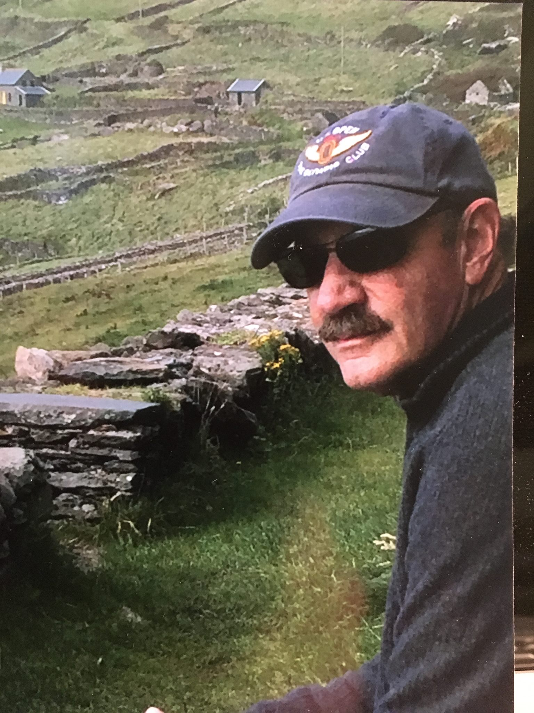
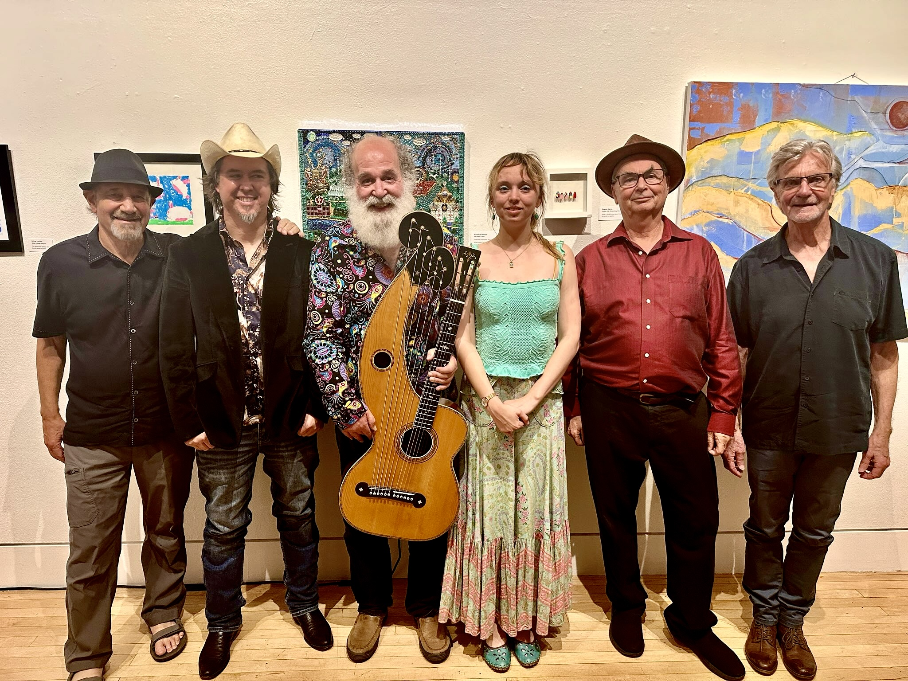
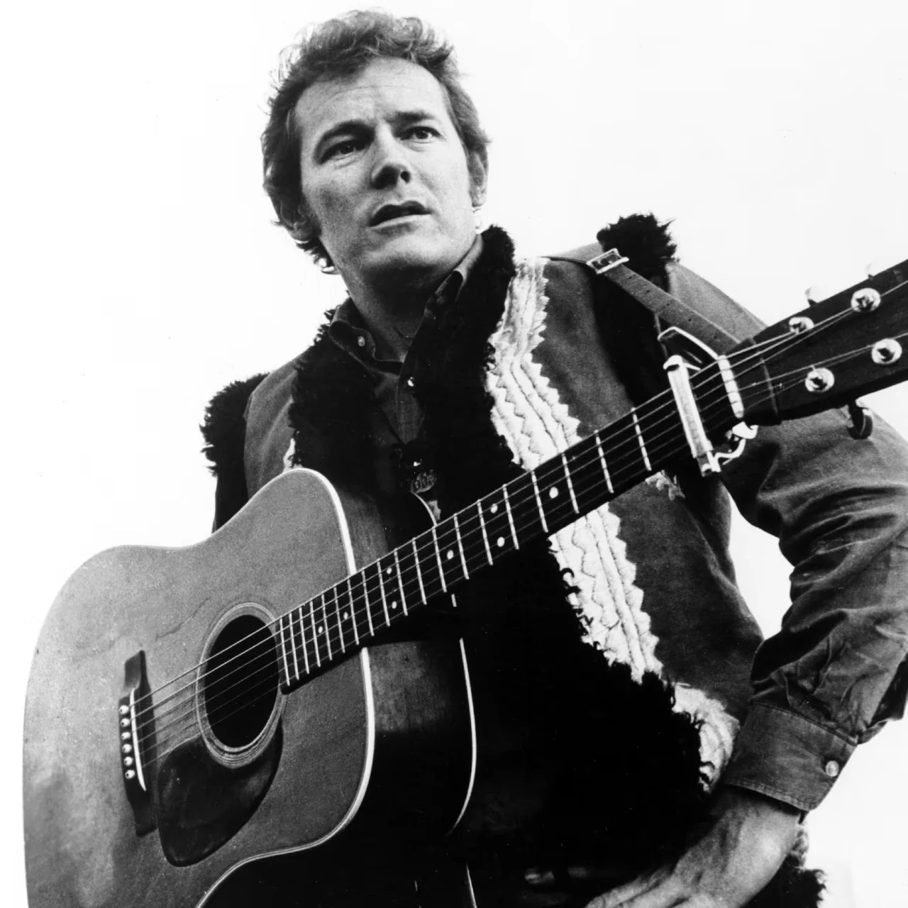
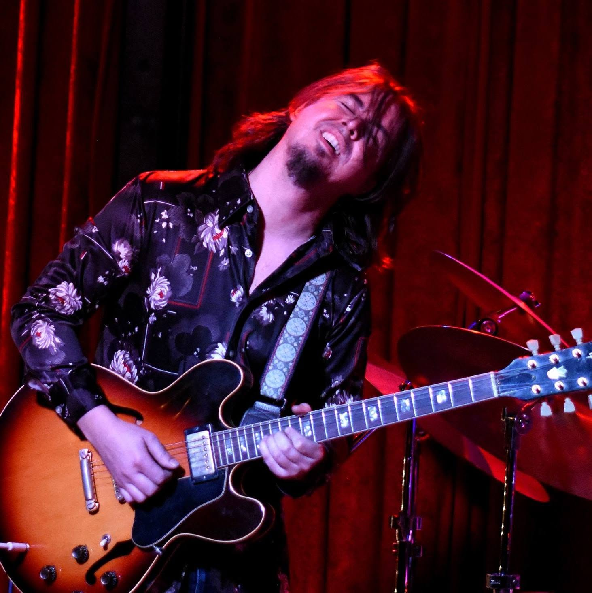
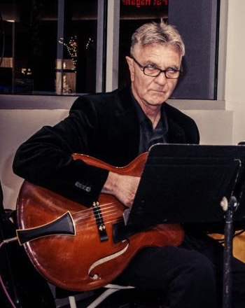
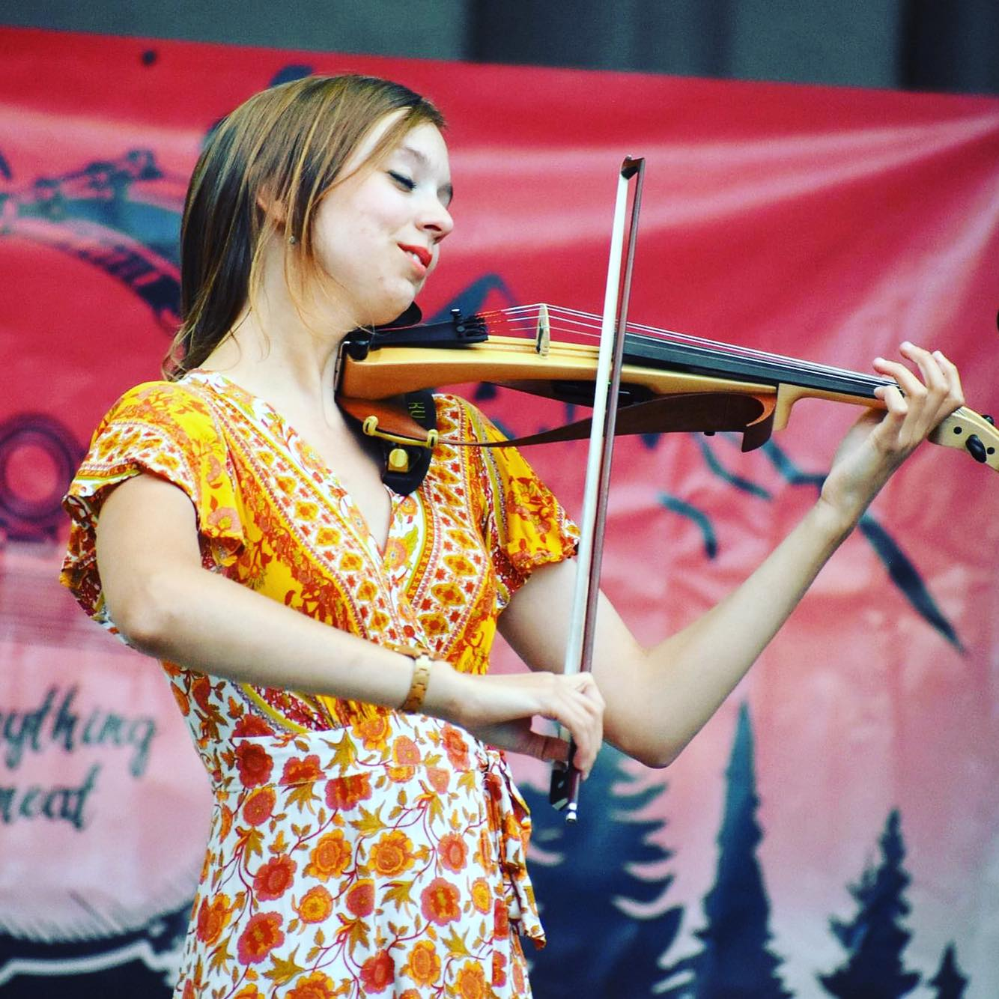
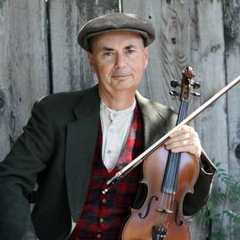

Bass
Tom Haber
Bassist Tom Haber has played in local bands for the past 50 years, covering multiple genres of music.
Musical connection A steady presence for songs that need warmth, patience, and forward motion.

Live ensemble performance
"When love is true, there is no truer occupation."
A group of musicians performing songs they deeply love, with care for the writing, the voices, and the room.
Featured video
A curated place for live performance video, built to stay quiet as the library grows.
Performance video placeholder

About the group
Gordon Lightfoot's songs invite close listening: plainspoken images, patient melodies, and stories that seem to widen as they unfold. The Gordon Lightfoot Project approaches that catalog with admiration for the craft and humility about the legacy.
The ensemble brings together multiple lead voices and acoustic colors, allowing different songs to pass through different singers. The aim is not to recreate Lightfoot, but to let the songs keep breathing in a live room.
Musicians
The ensemble brings together longtime Chico musicians, multiple lead voices, and a shared care for Lightfoot's songs.

Bass
Bassist Tom Haber has played in local bands for the past 50 years, covering multiple genres of music.
Musical connection A steady presence for songs that need warmth, patience, and forward motion.

Voice, multi-instrumentalist
Bruce MacMillan owns Chico's iconic Music Connection, which sells instruments and offers lessons for learners of all ages and levels.
Musical connection A vocalist and multi-instrumentalist, Bruce performs with many local bands, including the Rattlesnakes.

Voice, piano, guitar
John Mahoney is a vocalist, pianist, and guitarist. He spent his career in biomedical research and teaching.
Musical connection Brings a careful ear for lyric, harmony, and the quiet turns that make the songs feel lived in.

Voice, guitar
Gary Woods is a vocalist and guitarist, as well as a former filmmaker. He plays locally with Tom Haber in Los Caballitos de la Cancion.
Musical connection Gary also performs around Chico as a jazz guitarist and vocalist.

Violin
Caroline Fairchild plays violin, adding a bowed voice to the ensemble's acoustic arrangements.
Musical connection Her lines can carry melody, texture, and atmosphere without crowding the song.

Violin, viola
Joel Quivey plays violin and viola, extending the ensemble's string colors with both brightness and depth.
Musical connection The violin and viola parts leave space for the voices while drawing out the songs' emotional grain.
Upcoming & recent
A simple structure for dates as they are confirmed, without pretending this needs a heavy calendar system.
Concert and listening-room details will appear here.
A 7:30 PM benefit concert in the monca gallery space in Chico, California. The show raised several thousand dollars for monca and supported future arts and culture experiences for the community.
The musicians began playing together through the Townsend House Jam Band and have continued performing there most Friday mornings.
Listening rooms, arts presenters, and intimate concert spaces.
Booking
Send date, venue, location, expected audience size, and any technical details already known.